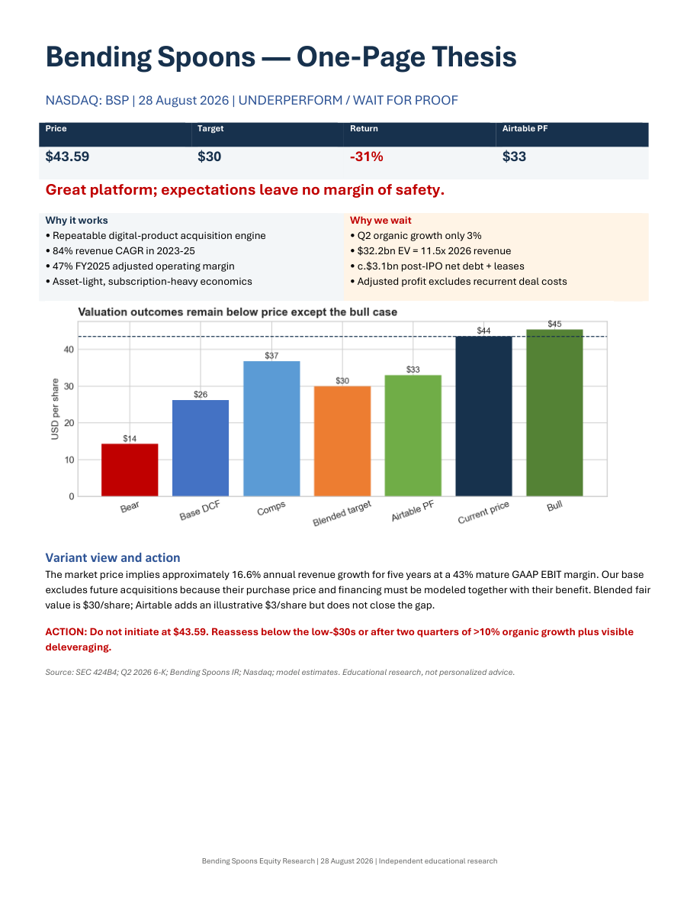

01 · Open source · 2026
parquet_info
- Creator
- Python
- CLI
A terminal-first inspector for moving from an unfamiliar Parquet file to useful evidence without opening a notebook or data platform.
Read case studySelected work
Tools, models and products described through the problem they address, the decisions behind them and the way they are meant to be used.
Project index
01 · Open source · 2026
A terminal-first inspector for moving from an unfamiliar Parquet file to useful evidence without opening a notebook or data platform.
Read case study
02 · Mathematical modelling · 2020—2026
An educational simulator that connects the SIR equations, adjustable parameters and epidemic curves in a local browser experience.
Read case study
03 · Software engineering · 2023
A distributed multiplayer board game spanning domain logic, two network protocols, two interfaces and resilient client state.
Read case study
04 · Equity research · 2026
Initiating coverage that connects audited filings, a five-year forecast and valuation scenarios to a clear, dated investment conclusion.
Read case study